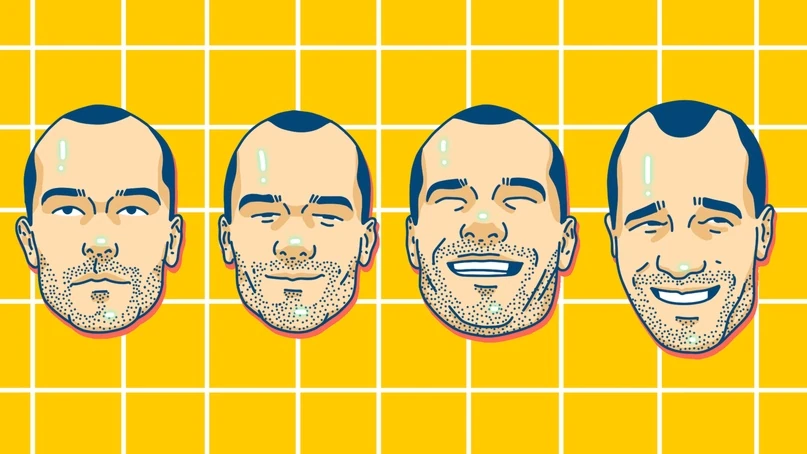
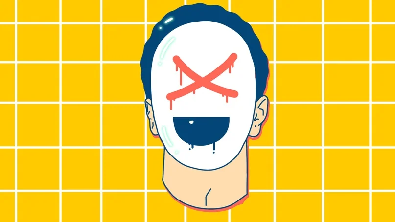

Улыбка как ценный ресурс, смех на похоронах и юмор как окно в диалог: Александр Сорге — о том, почему шутить нужно над всем.
«Улыбнись, и жизнь улыбнется тебе в ответ!» У любого хотя бы единожды возникало подозрение, что эта мантра — дерьмо собачье. И не зря. Американские ученые, проанализировав результаты 138 исследований, доказали, что искусственно натянутая улыбка практически не влияет на настроение. Так что ваш день от улыбки вряд ли станет светлее.

Русский человек знал об этом и без всяких исследований: мысль, что тупой лыбой делу не поможешь, с рождения высечена славянскими рунами у него где-то на внутренней стороне черепа. Тяжесть бытия падает гражданину России прямо на лицо и неумолимо тянет уголки рта вниз, особенно, когда утром ты вместе с ордой других урукхаев из какого-нибудь Мурина, утыканного многоквартирными башнями Сарумана, штурмуешь местную Хельмову Падь — станцию питерской подземки. И вся эта взаимная ненависть испаряется в воздух, а затем снова вдыхается с едким дымом сигаретки из конского навоза в селитрованной бумаге, отчего черты лица еще сильнее начинают стремиться к полу. Поэтому человек, беспричинно давящий лыбу, неизменно вызывает у нас подозрение: то ли блаженный, то ли перо в рукаве прячет. В общем, добра не жди.
Но это же обстоятельство делает улыбку таким ценным ресурсом. Ресурсом, который мы расходуем очень аккуратно. Да, мы не улыбаемся чужакам или фотокамерам, но щедры на улыбки близким и друзьям. Улыбка — как колбаса для тех, кто еще помнит дефицит: вроде и всегда под рукой, и почти ничего не стоит, однако бережется для особого повода. Так же осторожно мы относимся и к юмору.
Эссенция юмора
Юмор всегда был особой субстанцией для тех, кто живет на куске земли «от тайги до британских морей». Лекарством, без которого столкновение с реальностью порой заканчивается летальным исходом. Препаратом, который нужно принимать дозированно и строго по инструкции: над одним посмеяться можно, а над другим шутить никак нельзя.
На экраны это вещество поставляется исключительно в разбавленном виде, под чутким надзором государства, абы чего не случилось. От этого острый западный юмор, для которого почти нет запретных тем, часто плохо переваривается российским зрителем, вызывая словесную диарею у очередного моралиста в интернете, мол, «как вообще можно смеяться над этим?». Вседозволенность заокеанских скоморохов кажется нам недопустимой, а шутки часто принимаются слишком близко к сердцу.
Эссенцию юмора нужно применять осторожно. Ведь если ты вдруг сбрызнешь ею одну из сакральных тем, таких как блокада, как это сделал Алексей Красовский в своем «Празднике», или образ усатого тараканища, на который покусился Армандо Ианнуччи в «Смерти Сталина», то тебя сочтут не просто мудаком, но богохульником-осквернителем, место которого на священном костре. Чтобы понять природу этой осторожности, нужно разобраться, почему шутка вообще вызывает у нас улыбку.
Почему смешное нам кажется смешным? Самая распространенная «теория несоответствия», чьи корни тянутся еще к идеям Аристотеля и Шопенгауэра, гласит, что юмор рождается из противоречий и нашей способности эти противоречия подмечать. Комизм появляется, когда наши ожидания или представления о чем-либо оказываются опровергнуты: человек, предмет или идея попадают в несвойственное им окружение или ситуацию. Например, представьте себе карикатурного богатея: чопорного джентльмена во фраке, который неожиданно поскальзывается на банановой кожуре. Надменный и строгий образ, который возникает у нас в голове, никак не совпадает с той нелепой ситуацией, в которой он оказывается. На неоправданных ожиданиях строится классическая структура шутки сетап-панч.
Сетап, или образ, который возникает у нас в голове, задает нам один контекст ситуации, а панч, или какое-либо происшествие переносит ситуацию в совершенно иной контекст, заставляя посмотреть на нее с другой точки зрения. Артур Кестлер, развивший теорию юмора, назвал такой переход «бисоциацией». При бисоциации два несовместимых, но не противоречивых контекста неожиданно сталкиваются друг с другом и начинают казаться нам ассоциированными.
Наиболее простой пример бисоциации — каламбуры и вербальный юмор, когда шутка обыгрывает разные значения одного слова. Теория Кестлера хорошо описывает почти все виды юмора. Ситкомы сталкивают контексты, банально помещая героя в нетипичную, абсурдную для него ситуацию. Сортирный и похабный юмор начинает говорить о человеке в контексте личности со своими ценностями и убеждениями и переносит его в контекст, где человек — лишь животное, с инстинктом тыкать во все живое членом и пуляться дурнопахнущими биологическими жидкостями. Жестокий юмор, когда незнакомец получает битой по бубенцам, — суть та же бисоциация: «человек-личность» начинает рассматриваться в контексте физического объекта — куска мяса с нервными окончаниями, который подчинен законам физики (как раз таки пример с банановой кожурой).
В то же время, при переходе из одного контекста в другой значимость человека, предмета или идеи преуменьшается. Возвращаясь к гэгу с банановой кожурой: из надменного джентльмена мужчина превращается во всеобщее посмешище. Юмор действительно способен принизить все что угодно: остроумной ремаркой можно спустить человека с небес на землю, а насмешка может стать жестоким оружием: «смехом можно убить все — даже убийство». Из-за этого смех и юмор, в отличие от слез и других чувств, часто кажется нам неуместным, якобы обесценивающим ситуацию. Например, шутки про смерть очередной знаменитости в интернете могут поднять фекальное цунами, которое выплеснется аж на федеральные каналы: рассматривать смерть и еще ряд тем и событий в каком-либо еще контексте, кроме как официозно-трагическом, кажется нам априори кощунственным.
На похоронах, допустим, абстрактного Евпатия Лаврентича все обязаны давиться горькой водочкой и выдавливать из себя скорбь и слезы. Все произносят сухие характеристики, словно не провожают человека, а составляют на него досье: такой-то муж, такой-то отец, столько-то угля дал стране. Вместо образа человека перед нами возникает бездушный бронзовый бюст. Шутки и анекдоты про покойника кажутся неуместными, хотя, казалось бы, Евпатию Лаврентичу уже абсолютно все равно, что о нем говорят: он вместе с апостолом Павлом и сорока белогрудыми гуриями давно отжигает в Валгалле. Это поначалу. Но что происходит после второй-третьей рюмки? Из памяти достаются забавные истории и курьезы, которые приключались с Евпатием Лаврентичем за всю его долгую трудовую жизнь. И вот уже нам видится не бездушный бронзовый истукан, а живой человек: юмор оживляет покойника. Преуменьшая значимость события — смерти, юмор не только позволяет легче пережить утрату, но и обнажает суть: да, умер. Но человек-то был хороший.
Растворитель догм
Юмор действительно принижает значимость многих тем, но не умаляет их значения. Он лишь срезает всю эту претенциозно-торжественную вуаль, которая опутывает проблему, оставляя лишь сердцевину. Сердцевину, которую можно покрутить в руках и рассмотреть под разными углами. Отринув ханжество и морализаторство, мы увидим то важное свойство анекдота, которое часто упускаем: бисоциация, сталкивая два образа в нашем мозгу, ставя объект шутки в другой контекст, позволяет нам по-новому взглянуть на этот самый объект.

Распространенный сюжет чернушного скетча, где хладный труп вываливается из катафалка или просто падает и распластывается по земле, многим кажется кощунственным. Однако даже эта третьесортная юмореска позволяет нам по-другому взглянуть на смерть.
Столкновение образа человека-личности и человека-физического объекта — тухнущего куска мяса, приводит нас к нехитрой мысли: а не слишком ли много мы уделяем внимания посмертным ритуалам, не слишком ли много ненужного пафоса вокруг закапывания человека в землю? И не лучше ли выразить уважение этому человеку при жизни, ведь покойнику, лежит ли он на мраморном полу или под землей, уже, тащемто, все равно?
Шутить, хоть и осторожно, нужно над всем. Юмор открывает пространство для диалога, ведь менее серьезный подход часто позволяет нам трезвее взглянуть на ситуацию. Именно поэтому церковники всех мастей, усатые диктаторы и прочие сказочные персонажи политической фауны так не любят юмор: он не обесценивает тему, а открывает ее для обсуждения. И часто после этого выясняется, что за напускным пафосом кроется лишь парочка спорных утверждений. А за образом могучего короля, с которого юмор сбивает спесь, ставя на один уровень с нами, оказывается обычный человек, не такой уж и грозный. А чаще и вовсе голый.
Объявляя же определенные темы запретными для смеха, мы делаем бисоциацию, переход из одного контекста в другой, невозможной. Сакрализация закрывает путь не только для смеха, но и для любого диалога. А на выжженном поле, где нет места обсуждению, легко всходят столпы догм и идолов.